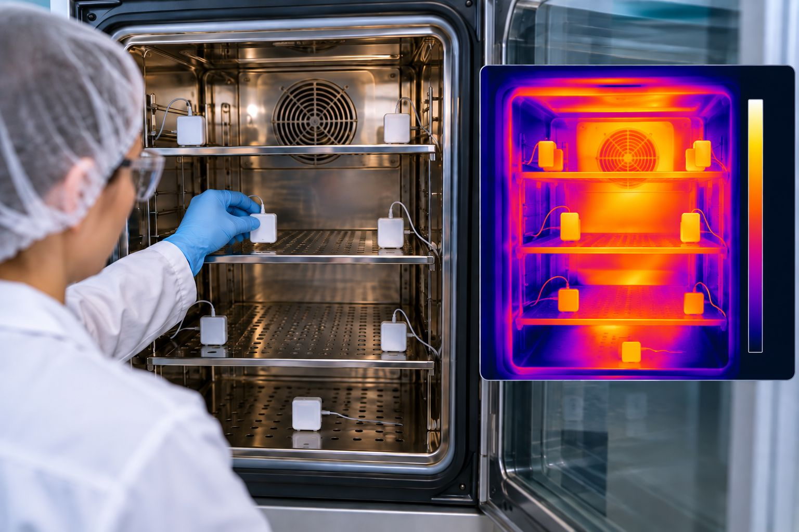

Jak wykonać mapowanie temperatury krok po kroku?
- przygotowanie, weryfikacja czujników i ich rozmieszczenie
- OQ bez wsadu, PQ z wsadem, czas i sezonowość
- kwalifikacja pierwotna vs rekwalifikacja, rola EMS
- offset wskazań, dokumentacja i komplet danych
Od zatwierdzonego protokołu do kompletnych danych z mapowania
- Czasok. 90 minut
- Poziompodstawowy / średniozaawansowany
- Formakurs online + przykłady + checklisty + metodologia krok po kroku
Mapowanie temperatury często wygląda prosto: rozwieś czujniki → uruchom rejestrację → poczekaj → pobierz dane. Ale największe błędy powstają, zanim pierwszy logger zacznie rejestrować. Czy czujniki mają właściwy zakres kalibracji i czy ich dokładność uwzględniono w kryterium? Czy rozmieszczenie obejmuje potencjalne miejsca worst case? Czy wykonujemy OQ czy PQ, kwalifikację pierwotną czy rekwalifikację? Czy EMS powinien już być zainstalowany? Czy badanie trwa wystarczająco długo?
MK1 prowadzi przez te decyzje w kolejności, w jakiej pojawiają się podczas mapowania. Mapowanie ma odpowiedzieć na praktyczne pytanie: czy w całej przestrzeni, w której może znajdować się produkt, utrzymywane są wymagane warunki — nie tylko obok termostatu, nie tylko w miejscu czujnika EMS i nie tylko przez kilka wybranych godzin.
Wynik jest wiarygodny tylko wtedy, gdy właściwie zaplanowano cały test — od kalibracji i rozmieszczenia czujników po wsad, czas rejestracji i dokumentację. MK1 pokazuje cały proces krok po kroku, tak jak wykonuje się go w rzeczywistej kwalifikacji.
Czego nauczysz się podczas kursu?
Po ukończeniu kursu będziesz wiedzieć:
- jak przygotować się do mapowania i co ustalić w zatwierdzonym protokole,
- jak sprawdzić status i zakres kalibracji loggerów i uwzględnić dokładność pomiaru przy ocenie kryterium,
- czym różni się mapowanie w kwalifikacji pierwotnej od rekwalifikacji i jaka jest rola czujnika EMS,
- jak zaplanować rozmieszczenie czujników i podejść do liczby punktów,
- jak przeprowadzić mapowanie bez wsadu i z wsadem,
- jak dobrać czas rejestracji i podejść do sezonowości,
- jak dokumentować rzeczywiste warunki badania,
- czym jest offset wskazania urządzenia i kiedy ma sens, a kiedy jedynie maskuje problem,
- jakie dane i załączniki zachować, aby wynik można było później wiarygodnie przeanalizować.
Wybrane zagadnienia
Najpierw ustal, gdzie jesteś w cyklu kwalifikacji
Kwalifikacja pierwotna ≠ rekwalifikacja. W nowym systemie dopiero poznajemy jego zachowanie i wyznaczamy reprezentatywne lokalizacje. Przy rekwalifikacji mamy już historię, ustawienia, zainstalowany monitoring i wcześniejsze wyniki — ten sam fizyczny test może mieć więc inny cel i dokumentację, zależnie od etapu lifecycle.
EMS nie zastępuje mapowania
Czujnik monitoringu pokazuje temperaturę w jednej lokalizacji, mapowanie — zachowanie całej użytkowanej przestrzeni. W kwalifikacji pierwotnej wyniki mogą posłużyć do wyboru reprezentatywnej lokalizacji EMS; podczas rekwalifikacji istniejący EMS jest dodatkowym źródłem informacji, a jego trend można porównać z zachowaniem przestrzeni. To przygotowuje do pytania: czy czujnik monitoringu nadal jest w odpowiednim miejscu, jeśli hot spot się zmienił?
Ile czujników rozmieścić?
MK1 pokazuje logikę doboru, a nie mechaniczne „zawsze dziewięć”. Uwzględniamy wielkość i geometrię przestrzeni, poziomy składowania, źródła ciepła/chłodu, drzwi i nawiewy, sondę sterującą, charakter urządzenia i potencjalne worst case. Szczegóły rozwijają MK7a (obszary CRT/CCT) i MK7b (urządzenia termostatyczne).
Bez wsadu — OQ
Przebieg: stabilizacja → uruchomienie loggerów → właściwy interwał zapisu → wymagany okres obserwacji → zakończenie testu → pobranie i kontrola kompletności danych. Sprawdzamy, czy pierwszy i ostatni rekord obejmują cały wymagany okres — test może trwać 24 godziny „na zegarku”, a plik nie musi zawierać pełnych 24 godzin danych.
Z wsadem — PQ
Pusta przestrzeń nie zawsze zachowuje się jak użytkowana: ładunek ma masę termiczną i wpływa na przepływ oraz dynamikę temperatury. Rozdzielamy OQ (zachowanie systemu bez wsadu) od PQ (zachowanie w reprezentatywnych warunkach użytkowania) oraz wsad stosowany w kwalifikacji pierwotnej od warunków możliwych do wykorzystania w rekwalifikacji.
Sezonowość — „latem” to za mało
Wytyczne odnoszą się do warunków reprezentujących najcieplejszy i najzimniejszy okres, ale nie wyznaczają jednej daty kalendarzowej dla każdej lokalizacji. Organizacja powinna umieć uzasadnić, że badanie reprezentowało właściwy worst case środowiskowy, zamiast polegać na nazwie miesiąca.
Offset — korekta czy ukrywanie problemu?
Jeśli wyświetlacz różni się od wartości reprezentatywnej dla wnętrza komory, określona korekta może być uzasadniona. Ale offset może korygować wskazanie — nie może naprawić niesprawnego urządzenia. Gdy system nie utrzymuje warunków, właściwą ścieżką jest znalezienie przyczyny i naprawa, a nie „przesuwanie liczby na ekranie”, aż wygląda poprawnie.
Od wykonania testu do analizy
MK1 kończy etap wykonania: poprawnie przygotowany test, rozmieszczone czujniki, udokumentowany wsad, pełny zakres czasowy i komplet danych. Dalej jest MK6 — analiza wyników i raport kwalifikacji. MK1 uczy poprawnie wygenerować dane, MK6 — poprawnie je zinterpretować.
Dla kogo?
Validation / Qualification, C&Q, Engineering, QA, właściciele urządzeń i obszarów termostatycznych, osoby wykonujące mapowania, przygotowujące i zatwierdzające protokoły oraz pracownicy laboratoriów korzystających z lodówek, zamrażarek, inkubatorów i komór klimatycznych. Dobry pierwszy kurs w ścieżce termostatycznej, także dla zaczynających pracę z kwalifikacją. Wiedza z MK1 dotyczy m.in. lodówek farmaceutycznych, zamrażarek, ULT, inkubatorów, komór klimatycznych, magazynów CRT i chłodni CCT.
Podstawa merytoryczna
ISPE Good Practice Guide: Controlled Temperature Chambers · WHO TRS 961 Supplement 8 · EU GMP Annex 15 · ICH Q9/Q10 oraz praktyczne doświadczenia z wykonywania kwalifikacji i mapowań systemów o kontrolowanej temperaturze.